a)
Consider a network flow G = (V, E) with edge capacity and vertex capacity
Keep the edge capacity constraint, skew symmetry and flow conservation same.
Consider the new requirement: for every there is a need for
Consider, G’= (V’, E’) with only edge capacity be a new flow network. The maximum flow in G is equal to a maximum flow in G’ and vice-versa.
G’ is the edge capacity given by.
To construct G’ from G, it is necessary to splitting every vertex into two vertices vin and vout.
After splitting, insert a new edge (vin, vout) with capacity c’(vin, vout) = d(v) between the two parts of the split vertex.
From the above constraints,
Let, ‘s’ and ‘t’ be the source and the sink vertex in G respectively, the source vertex and the sink vertex in G’ is sin and tout.
In order to reduce the escape problem, let there be n starting points on the grid and 4m-4 boundary points. Now, construct G= (V, E) considering the below points:
• Assume s as a temporal source vertex and connect it to each of the n starting points.
• Assume t as a temporal sink vertex and connect it to each of the 4m-4 boundary points to t.
• Each undirected edge between point’s u and v in the original grid is changed into directed edges (u, v) and (v, u) in G.
• The edge capacity is assigned to 1 to each vertex in G.
b)
Efficient algorithm to solve the escape problem running time:
• Number of points in the input grid has = n2 points
• Number of undirected edges = 2n2 -2n
• Therefore, G has 2+n2 = O(n2) vertices and m+(4n2-4)+2(2n2-2n)=m+8n2-4n-4 =O(n2) edges.
• Hence, the running time is O(n2).
• By applying ford-Fulkerson method on G’ the cost is O(E’.|f*|) = O((E+V).|f*|), here f* is maximum.
• In this case, |F*| 4n-4 and
|E|+|V|=O(n2).
4n-4 and
|E|+|V|=O(n2).
• Therefore, for higher bound running time is O((E+V).|f*|=O(n3)
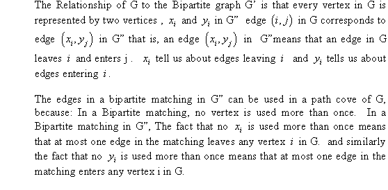
Flow Network
A flow network, in the most basic form, is a directed graph. Each of the edges has a capacity assigned to it. In the network a certain amount of flow goes from each edge of the network. There are certain nodes in the graph from which the flow starts and to which the flow ends. These two nodesare known as the sourceand sink of the network respectively.
In the diagram below the node s is the source of the network and the node t is the destination or sink of the network. Each of the graph edge has a capacity. The capacity defines the data value that can go through that edge. The capacity is always a positive integer. One more thing is that if there existsan edge from a vertex v1 to vertex v2 than there can be no edge from v2 to v1.

In the above diagram the vertex s is called the source of the network and the vertex t is called the sink or destination of network. The capacity of each edge is shown alongside the edge. As the edge from s to v1 has the capacity of 16. A flow network has various applications in practicality. It is used in data warehouses, scientific research and electricity distribution etc.
Algorithm consulting: Consider that in an algorithm consulting company there are n important subareas of algorithms. For a particular area of algorithms thedollars are being paid to hire an expert. The company has lined up of potential job. To perform a job, experts are hired from the subsets of subareas. These experts can work on multiple jobs at a time. It gives the company the revenue in dollars (pi). The area in which the hiring of algorithm experts is required is as:
The potential jobs set that are defined by the hiring company as:
The company’s target is to maximize the revenue. The maximum net revenue of the company is calculated by subtracting the cost incurred in the employing the experts from the total income of accepted jobs.
A flow network G for algorithm consulting: The flow network created for the algorithm company has a source network s, vertices, vertices and a sink vertex t. The edges of this network are defined as:
For there is an edge with capacity as shown below:
For there is as edge which has the capacity as shown:
There is one more condition in the flow network that is andif the vertex then there is an edge from vertex to vertexwhich has infinite capacity.
The flow network created from the above description is as:
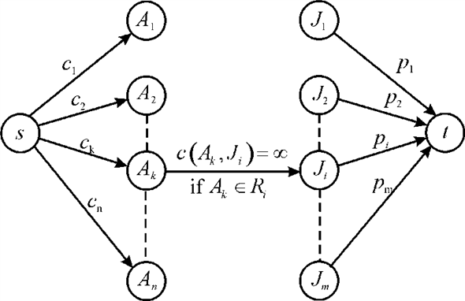
a. Suppose that for a finite capacity-cut, one of the vertices is on the S side. S side refers to the vertex partitions in which source s is present. Now, if a vertex is present on the S side, then the edge connecting with the vertex will be counted when calculating the value of the cut. To recall, it can be stated that a cut involves the sum of edges between vertices of S and T (corresponding to sink). The capacity of the cut (S, T) is:
Now, since the vertex will be on S side and the edge will be counted, the capacity cannot be finite, since the edge weight is not finite for the connection of with.
Other approach-Proof by contradiction: For the contradictory proof consider that in a graph having finite capacity cut (S, T) it is true thatfor the vertices.
Now, if then it must be in the set of S that is.
Now, it is known that. So, the cut (S, T) will be on the edgein the network G as shown in the figure:
From the graph it is clear that the capacity of the edge is. So, the capacity of cut (S, T) will be infinite. The assumption is contradicted here. Hence, the cut (S, T) will be of finite capacity cut if for.
b . Consider a flow network graph G (V, E) with the capacity c(u, v) from node u to v having source s and sink t. For maximum amount of flow, this is sentfrom s to t through the network.
Now, considering the above expression of maximum flow, the problem can be modeled as a flow graph. In the model M of problem there will be two attributes first is the set of accepted jobs M.J and the other denotes the set of experts hired M.A. The model for the problem will be valid only if all the hired experts are required for the jobs.
Consider M as a valid project plan that is in this project plan the requirement for the experts is fulfilled. Now, if is the accepted job set that is then for each, the expert will be the part of hired experts that is.
The edges from s to is representing the cost and the edges from vertices to sink t would represent income, that is:
The maximum net revenue of the company is calculated by subtracting the cost incurred in the employing the experts from the total income of accepted jobs. For finding the project plan with maximum net revenue the lemma will be used which is setting up the relationship between the minimum cut capacity and the valid project plan revenue.
Lemma: In a flow network G, for a minimum cut 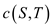of finite capacity there must be a valid model of project having total revenue.
The proof of lemma will be done in two parts in the first part the project model will be created for a network having a finite capacity cut. While in the other part the minimum cut of finite capacity for a valid project model will be created.
Now, for the first side consider that (S, T) is a minimum cut of finite capacity in a flow network G. Creating the project model M for this graph which contains the job set in the attribute M.J in the condition when . It also includes the expert in the attribute M.A for. As it is proved in the previous part that the project model M is valid because for eachit is true thatif and only if.
It is assumed that the cut(S, T) is of finite capacity, so there will not be any edge which crosses the cut forand. In the finite cut (S, T) the edges joining the vertices of set S to set T must be either in the form ofor.
Now, suppose that andare edges set of the formand respectively and these edges are crossing the cut. So the capacity of cut:
… … (1)
Consider that is possible only whenwhich is possible if and from the graph G,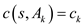.
So,
Similarly for the edges of the form the
possibility that is true
only when it
meanswhich in
turn proves that. From the
constructed graph G the capacity of edge is that is
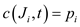.So,
that is
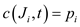.So,
Suppose that r is the total revenue of the project model M then from the definition of revenue:
c. Consider the graph G drawn above containing the source s and sink t and the edges
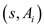
Having capacity  which
represents the cost of hiring expert and the
edgeshaving
capacity,
representing the revenue for job plan.
which
represents the cost of hiring expert and the
edgeshaving
capacity,
representing the revenue for job plan.
For finding the right job selection and the eligible expert for that job first of all finding the maximum flow in the created flow graph. After that minimum cut set is discovered by using the depth first search algorithm. If any expert who belong to the minimum cut set but is not hired yet then hire that expert. Similarly if a job doesn’t belong to the minimum cut then accept that job.
The algorithm for the selection of right job and expert can be written as follows:
1. Find the maximum flow and the residual network for the graph.
2. Find the minimum cut setusing the depth first search (DFS) traversal.
// check if the edge belongs to the minimum cut.
3. if E
4. Hire the expert
// check if the edge do not belong to minimum cut.
5. if E
6. Accept the job
7. end
The DFS method used in the above algorithm is as follows: The depth first search is a searching method which starts its process of searching from the root node and explores all the nodes till the end before returning back. The depth first search algorithm initially all the nodes are painted with white color and the parent of each node is set to NIL. The initial time to visit the node is also set to zero. After that each white node is explored and the status is updated by calling the process DFS-VISIT.
DFS ( G )
// run the loop for each vertex of graph
1. for each vertex
// assign the color to each node
2. u.color= white
// store nil in the parent field of each node
3.
// initial time of discovering the node
4. time = 0
// execute loop once for each node
5. for each vertex
// check if the color of the node is “white”
6. if u.color = white
// call the method to discover the node
7. DFS-VISIT (G, u)
So the above two “if” conditions give the accepted jobs
And the hired expert
Analysis of algorithm: The total complexity of the algorithm would depend on the implementation of the maximum flow algorithm. Here, n and m refer to the range of value of i and k used in the algorithm stated above. Above algorithm set has length of n and potential job associated with these subareas have length m.
So, total option comes out to be mn. And this is the worst case because here consideration is up-to last option. Finally, for hiring the expert, again set A comes in the picture which has length n. Now, taking all considerations which are mentioned above gives the final running time of. This is the extreme case, and it will not exceed the range. So, this is an optimal and efficient approach. Hence, the total time of execution of the algorithm which selects which expert to hire and which job to choose would be.
Flow Network
A flow network, in the most basic form, is a directed graph. Each of the edges has a capacity assigned to it. In the network, a certain amount of flow goes from each edge of the network. There are certain nodes in the graph from which the flow starts and where the flow ends. These two nodes are known as the origin and destination of the network respectively.
In the diagram below, the node s is the origin of the
network and the node t is the destination or sink of the
network. Each of the graph edge has a capacity. The capacity
defines the data value that can go through that edge. The capacity
is always a positive integer. If there exists an edge from a vertex
 to
vertex
to
vertex  , than there
is an edge from v2 to v1.
, than there
is an edge from v2 to v1.
In the above diagram, the vertex s is called the origin of the network and the vertex t is called the sink or destination of network. The flow limit of each edge is shown alongside the edge. As in the graph, the flow limit of edge s to v1 is 16. The flow for an edge is defined as the amount passed from a vertex to the other vertex. For any edge of the network, the total value of flow is either smaller than or equal to the flow limit of concerned edge. The total flow is the total amount being passed through the network.
Maximum flow: For a flow network, maximum flow is defined as the largest quantity of flow that could pass from the origin vertex to the destination.
Cut and minimum cut: For a flow network, the cut (S, T) is the division of the vertices of the network into two groups S and such that the source vertex s is contained in set S and the sink vertex t is contained in set T.
The flow valueof the cut
is defined as the sum of flow of every edge for
whichand. It means
that the total flow of a cut is the total of the flow of edges from
S side to T side. The formula of calculation of flow
of cut is as follows:
for
whichand. It means
that the total flow of a cut is the total of the flow of edges from
S side to T side. The formula of calculation of flow
of cut is as follows:
The limit of flow of the cut in a flow network is the sum total of the capacities of the edges involved in the cut. The formula for the cut capacity is,
Minimum cut is that cut of the flow network for which the sum of capacity of cut edges is minimum.
Maximum flow by scaling: Consider that  as a flow
network. Source (it is considered as the origin of flow) as
as a flow
network. Source (it is considered as the origin of flow) as
 and
sink (it is considered as the end point, that is, the point where
flow gets accumulated at the end) as
and
sink (it is considered as the end point, that is, the point where
flow gets accumulated at the end) as . Each edge,
say
. Each edge,
say  , has some
integer capacity denoted by.
, has some
integer capacity denoted by.  is defined
as.
is defined
as.
a. Minimum cut of a graph G is that for which the total sum of capacity of edges involved in the cut set in is minimum. That is, the edges are selected in such a way that their sum is minimum.
As in the graph G there are E edges, therefore
maximum number of edges that are leaving and entering
cannot be greater than .Since,
C is defined as, is the
largest possible flow limit of any edge in the network therefore
the flow limit of edges can be more than C.
.Since,
C is defined as, is the
largest possible flow limit of any edge in the network therefore
the flow limit of edges can be more than C.
Now, if the cut(S, T) is lowest capacity cut of the network is crossing all the edges then the capacity of cut;
Therefore, maximum flow of graph can be at most.Hence, by max-flow min-cut theorem, the minimum cut of graph G can have greatest value of capacity .
An augmenting path of a Graph G is a simple path in a graph starting from source s and ending at sink t which has a non-negative capacity. Hence, if there is a possibility of an augmenting path, the flow of a graph is not a max-flow. Thus, it can be concluded that flow of a graph is a max flow if no augmenting path is possible in the flow network. The capacity of any augmenting path is always equal to the flow limit of that edge which has minimum flow limit in the augmenting path.
For example: Suppose thatis an augmenting path in the flow network. Then its capacity can be calculated by the edge belonging to the path with minimum capacity. For finding out an augmenting path of capacity not less than K, search for those edges having capacity at least K. If there is any edge in the graph which has capacity less than K then ignore that edge.
Breadth first search will be applied to find a path by
considering only those edges having residual capacity at least
K. Breadth first search is the method of searching in a
graph. In this method, each node of the graph is explored in a
sequential order. The time taken by breadth first search for a
graph having V vertices and E edges is. Since for
a flow network, , therefore
total time is  .
.
Hence, breadth first search is an efficient way to search for an
augmenting path which has minimum capacity K, and it takes
time.
c.
As in the MAX-FLOW-BY-SCALING method, the search for the path having capacity from down to 1 is done. If such path, with an augmenting path having capacity greater than 1 is found, then the flow is augmented with that path.
This is the same concept as in FORD-FULKERSON method, so it is clear that the MAX-FLOW-BY-SCALING algorithm uses FORD-FULKERSON method. It is true that the flow value in a network will always be an integer. Thus, the capacity of augmenting path is a positive value, and hence, the augmenting path is not found in the residual network. Therefore, MAX-FLOW-BY-SCALING method always returns a largest value of flow.
Illustration of MAX-FLOW-BY-SCALING algorithm:
1. The graph below shows the flow network in which the dark black continuous show an augmenting path of minimum capacity 4.
2. Pass the flow equivalent to the flow limit of the augmenting path through the path and update the flow value as shown in the graph below:
3. Now, the residual network of flow graph again shows an augmenting path of the network with minimum capacity 6.
4. Again, pass the flow through the path equal to the minimum capacity of augmenting path.
Now, as the edges towards sink t are saturating edges with no more flow that can be passed through them, the greatest value of flow in the network is 10. Hence, the algorithm MAX-FLOW-BY-SCALING returns the largest value of flow in the network.
As there are E edges in the graph and each time line 4 is
executed, the greatest flow limit of the residual network  can be
2K. This is because, in a flow network, flow between edges
has two phases. One is sink and the other is source, and the
maximum capacity of a flow is K. Thus, the final outcome is
2K.
can be
2K. This is because, in a flow network, flow between edges
has two phases. One is sink and the other is source, and the
maximum capacity of a flow is K. Thus, the final outcome is
2K.
In (b) part, it has been shown that there
is an augmenting path of capacity at least K in time. Here,
the change is in the value of K. Thus, minimum cut of the
residual network Gf can have the capacity at most
,
that is, .
e.
As in the part d, it is been calculated that for
residual network , the flow
limit of the cut with lowest capacity cannot be greater than
whenever the
line 4 of the algorithm MAX-FLOW-BY-SCALING executes. The value of
largest flow in the network G is the sum of the flow value
in the network G and the largest flow value in the residual
network of G. That is,
Here, f is the flow in network G, and f’ is
the flow in residual network. By max
flow min-cut theorem, the maximum flow of is at
most.
Now, by definition, each time line 5 is executed, K
capacity is calculated of augmented path, which is capacity of
residual network. Therefore,
for each value of K, loop of lines 5-6 runs at most
times, that is, times.
f.
The total running time of MAX-FLOW-BY-SCALING algorithm depends on the following 3 factors:
1. Execution time of while loop in line 4.
2. Execution time to find an augmenting path of capacity at
least  of line
5.
of line
5.
3. Execution time of while loop of line 5 for each
fixed.
1. Initially,. Each time
value of is reduced
to half of its original value that is. It can be
said that above sequence is a geometric progression (GP)
with ratio being ½. Now, minimum value of is 1, that
is,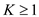. Thus, the
sequence is as follows:
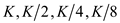 … … (1)
Now, calculate number of terms that will be equal to the number of times loop is running. By definition of GP,
Here,
=
 =1
=1
Thus,
Substitute the value of.
2. By part b, for a given , to find an
augmenting path of capacity at least , will
take
time.
3. By part e, for each value of , while loop
of line 5 will take time.
Combine the time calculated from equations (1), (2) and (3).
Total time is that is.
Hence, the MAX-FLOW-BY-SCALING algorithm can be implemented as it will take for its execution.
Bipartite Graph
A graph G (V, E) is the bipartite graph in which V is made up of two collection of vertices such that and each of the edges of graph is as it joins a vertex from set P to the vertex that lies in set Q. Consider the graph.
In the graph discussed above, the concerned set of verticeswhere andboth the vertex sets are disconnected mutually.
Matching: In a bipartite graph the matching is a group of edges such that any of its edges do not share the same end points. A vertex, included in the matched set of edges, is the vertex is used in creation of a matched edge is called as the saturated vertex.
For example: See the graph below which highlights the edges of matched set M.
The matching set is as:.
Matching is also called as maximal matching if there are no more edges that can be included into the matching set M and it is called the ideal or the perfect matching if no unmatched vertex is found.
For example: Consider the above graphand notice its highlighted edges:
The matching set is as: . The
matching shown in the above graph is maximal matching but not the
perfect matching because vertex c is not matched with any
other vertex.
. The
matching shown in the above graph is maximal matching but not the
perfect matching because vertex c is not matched with any
other vertex.
The Hopcroft-Karp bipartite matching algorithm: The algorithm of Hopcroft-Karp bipartite matching is the faster algorithm to search a maximum matching in a bipartite graph. More specifically for a given bipartite graph say it takes time to find a maximal matching.
Consider that  is a
matching then a simple path P in G is called an
augmenting path with concern to the matching M if it starts
at a vertex which does not exist in the set of matched vertex and
end at an unmatched vertex and for every pair of subsequent edges
on P one of them is in M and another one is not. In a
graph a least possible augmenting path with reference to M
is the one which holds the lowest quantity of edges in it.
is a
matching then a simple path P in G is called an
augmenting path with concern to the matching M if it starts
at a vertex which does not exist in the set of matched vertex and
end at an unmatched vertex and for every pair of subsequent edges
on P one of them is in M and another one is not. In a
graph a least possible augmenting path with reference to M
is the one which holds the lowest quantity of edges in it.
Symmetric Difference of two collections of elements is a set of elements which has only those items that are inexactly one of the two concerned sets. That is given two sets A and B the symmetric difference is defined as.
a. Consider that as a
matching set and  is an
augmenting path with concern to M that is the starting and
ending vertex of path P are not the vertices joining the
edges in the matching set of edges and there is alternate matched
and unmatched edges.
is an
augmenting path with concern to M that is the starting and
ending vertex of path P are not the vertices joining the
edges in the matching set of edges and there is alternate matched
and unmatched edges.
Now, since every augmenting path is
alternating and it starts at unmatched vertex and end at an
unmatched vertex. So, it must have possibly one edge more in its
unmatched edge that is compared to
matched edges. So, is a
matching and.
For example: Consider the following a bipartite graph:
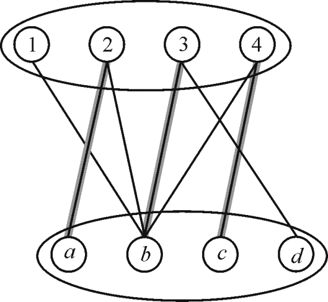
In this graph the matching and the pathis an augmenting path and the edge set of path.
In the set M there are only three edges while in set there are four edges which is one more than the edges in M so.
Now, considerare the
augmenting paths such that no two paths are having same vertices
with respect to. Vertex
disjoint paths are the one having no internal vertex as common
among them.
Now, in order to get the cardinality.
b. Consider that and
are
two matching in . Since each
of and
can contribute at most 1 each to vertex’s degree of set. So degree
can be at most 2 that are every vertex in graph has a
degree at most 2.
. Since each
of and
can contribute at most 1 each to vertex’s degree of set. So degree
can be at most 2 that are every vertex in graph has a
degree at most 2.
Since  is graph of
vertices whose degree can be at most 2 so components of graph
should be either a path or a cycle or an isolated point. So it can
be concluded that is a
disjoint union of simple paths or cycle. Edges of set are
alternatively belong to and. So each
cycle of above graph is even. Given that.
is graph of
vertices whose degree can be at most 2 so components of graph
should be either a path or a cycle or an isolated point. So it can
be concluded that is a
disjoint union of simple paths or cycle. Edges of set are
alternatively belong to and. So each
cycle of above graph is even. Given that.
Since every path of which is
not augmenting path with respect to must have
equal number of edges form and
since.
It can also be said that each such path has exactly one edge more
form than
from. So there
is the need of at least such paths.
Since all these paths are vertex disjoint augmenting path having
starting and ending at unsaturated points.
.c. Consider that  is the
length of the smallest augmenting path with the respect of
matchingof the graph
G. Let be a
largest set of augmenting paths of uncommon vertices having length
with respect to.
Let=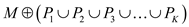and suppose
that P is a shortest augmenting path with respect
to.
is the
length of the smallest augmenting path with the respect of
matchingof the graph
G. Let be a
largest set of augmenting paths of uncommon vertices having length
with respect to.
Let=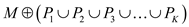and suppose
that P is a shortest augmenting path with respect
to.
Since path is which may
have some common vertices with therefore
has
more than edges
otherwise it will oppose the fact thatbe a
ultimate set of vertex-disjoint augmenting paths of length.
d. Consider that is the
length of the least possible augmenting path with reference to the
matching. Assume
that be a
superlative set of augmenting paths that have no vertex in common,
of length with
respect to. Let
=and suppose
that P is a shortest augmenting path with respect
to.
Consider that the concerned path P may have some common vertices withthat are path P is not vertex disjoint with other paths. Assume that Ais the collection of edges.Now, .
Therefore,
Now, consider as an edge
set of a connected component  of the
graphso,
since, therefore
contains lowest of
vertex-disjoint augmenting path with respect to least possible
length of each of such path is.
Therefore,
of the
graphso,
since, therefore
contains lowest of
vertex-disjoint augmenting path with respect to least possible
length of each of such path is.
Therefore,
Now, since is not a
vertex-disjoint from other paths therefore it should have
necessarily a matching edge with some path corresponding
to.
Hence, the path has more
than l edges.
e . Consider the compact augmenting path in
the reference of matching has
edges. Suppose that be another
matching. Since symmetric difference between and
will have at-least augmenting
paths have no vertex in common. Each of the above paths will have
at least vertices.
Therefore,
Hence, the cardinality of maximum number of matching in the graph will be:
.
f. Finding augmenting paths, the HOPCROFT-KARP
algorithm repeatedly increases the size of a matching. This
algorithm avoids finding the augmenting path in each it executes
because its purpose is to find the ultimate set of smaller paths.
For this, only  numbers of
iterations are needed.
numbers of
iterations are needed.
In this algorithm, every phasehas a single BFS (breadth first
search) and DFS (depth first search). Due to this, phases run in a
linear time fashion. Therefore, in a graph with  vertices and
edges, and
for the first
vertices and
edges, and
for the first phases, it
will take a time of.
phases, it
will take a time of.
Each phase increases the length of lowest path that is
augmented, by one and searches biggest value length inthe provided
length. So in the completion ofphase, there
are at leastedges of the
shortest augmenting path.
So, in the collection, if the path length is lowest of, then there
will be no more than apath length
and the most favorable matching differs from the span of M
by at mostedges.After
iterations, the length of the lowest augmenting path will be at
least.
Therefore, the required number of repeat loop iterations will be at most.
In this algorithm every phase increases the matching length by atleast one.
So, an additional
phase is added to it before the algorithm terminates. Hence, there
are maximumiterations
of repeat loop are possible in the algorithm.
g. Consider that the graphbe a
bipartite graph. Let be a set of
incomparable vertices in . For
searching the augmenting path having no two vertices in common, the
breadth first search and greedy approachcan be used. The algorithm
is as:
. For
searching the augmenting path having no two vertices in common, the
breadth first search and greedy approachcan be used. The algorithm
is as:
Breadth first search:
// execute the loop for each vertex in graph
for every vertex
that alternates between matching and non matching edges,
stop the breadth first search at  level.
level.
In this case will be the
smallest form source to the free vertex in .
.
Let  donates the
set of all vertices that are not matched and present in
donates the
set of all vertices that are not matched and present in
that are discovered at level.
Now performing a greedy approach,
// execute the loop for all the vertices that are not matching
for every vertex say
It is needed to do backtracking along its predecessor until the vertex is found successfully.
Now
// check for an unmarked vertex
if  is
unmarked
is
unmarked
then saving the path between and

mark vertex as
taken.
Since there is maximum E edges in the graph sothe
searching of the paths can be done in time. That
is it will take time to find
a maximal set of vertex-disjoint smallest augmenting path for a given
matching. From above
the repeat loop will run at most times.
Hence, the actual time taken by the HOPCROFT-KARP algorithm for its
execution will be.